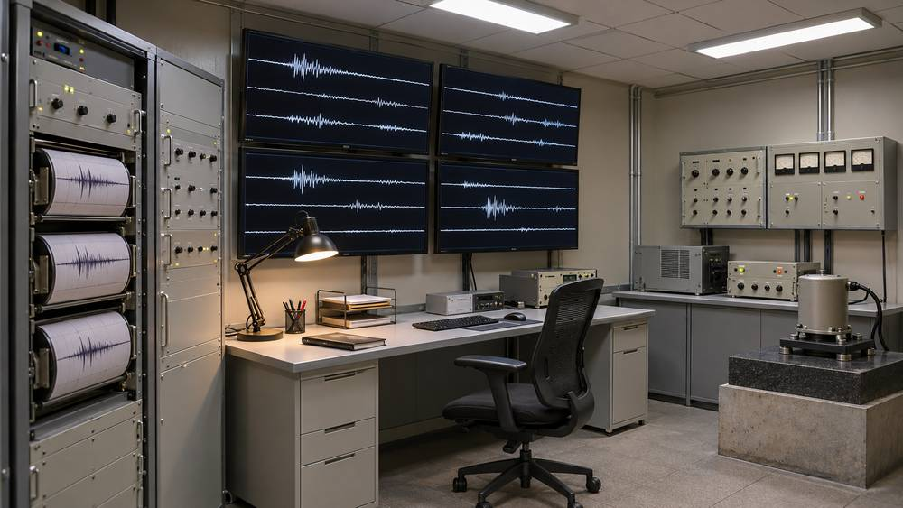

상주 규모 3.6 지진, 54km 떨어진 연구용 원자로 계측값 0.0010g…원전 중엔 한빛이 0.0031g로 가장 커

원안위 "내진설계값 0.2g보다 낮고 현장 점검도 이상 없어" / 진앙 반경 30km, 1978년 이후 규모 2.0 이상 52번·1978년엔 규모 5.2
11월 17일 오후 11시 10분 경북 상주시 북서쪽 22km 지역에서 규모 3.6의 지진이 나, 진앙에서 약 54km 떨어진 대전 하나로 연구용 원자로에서 0.0010g의 흔들림이 계측됐다. 원자력안전위원회는 18일 0시 35분 낸 자료에서 이 값이 하나로의 내진설계값 0.2g보다 낮고 대전지역사무소의 현장 점검에서도 특이 사항이 없었다며, 국내 모든 원자로 시설의 안전성에 이상이 없다고 밝혔다.
원전별 계측값은 한빛 0.0031g, 고리 0.0012g, 한울 0.0005g, 새울·월성 각 0.0003g이었다. 기상청에 따르면 이번 지진은 깊이 20km에서 일어났고 올해 국내에서 난 지진 가운데 규모가 가장 컸으며, 최대 계기진도는 경북·충북에서 Ⅳ였다.
진앙 반경 30km 안에서는 1978년 관측 이후 18일 오전 1시 30분까지 규모 2.0 이상 지진이 52번 기록됐고, 그 가운데 가장 큰 것은 1978년 9월 16일 규모 5.2였다. 기상청은 같은 시각까지 규모 2.0 이상 여진은 없었다고 밝혔다.
시민에너지 관점
원안위는 지진 1시간 25분 뒤 원전별 계측값을 숫자로 내놓았고, 이번 흔들림은 설계값에 크게 못 미쳤다. 다만 상주 일대는 1978년 규모 5.2가 기록된 곳이고, 이번에도 원전별 계측값은 기관 발표를 거쳐서야 주민에게 알려졌다. 원전 주변 지자체와 주민이 계측값과 점검 결과를 바로 받아 볼 수 있는 창구를 제도로 만들어야 한다. 한 곳에 몰린 대형 발전소 대신 지역마다 나눠 둔 재생에너지를 늘리는 일도 같은 안전의 문제로 다뤄야 한다.
출처: 원자력안전위원회 2026-11-18 보도자료 「경북 상주시 인근 규모 3.6 지진 관련, 원자로 시설 안전에는 영향 없는 것으로 확인」(안전정책국 원자력안전과, 11.18. 0:35 배포) 원문 보기
출처: 기상청 2026-11-18 보도자료 「경북 상주에서 규모 3.6 지진 발생」(지진화산국 지진화산감시과, 11.18. 08:00) 원문 보기
尚州でM3.6の地震、54km離れた研究用原子炉の計測値0.0010g…原発では霊光（ハンビッ）が0.0031gで最大
原子力安全委「耐震設計値0.2gより低く、現場点検でも異常なし」 / 震央半径30km、1978年以降M2.0以上が52回・1978年にはM5.2
11月17日午後11時10分、慶尚北道尚州市の北西22kmの地域でマグニチュード（M）3.6の地震が発生し、震央から約54km離れた大田のハナロ研究用原子炉で0.0010gの揺れが計測された。原子力安全委員会は18日午前0時35分に出した資料で、この値はハナロの耐震設計値0.2gより低く、大田地域事務所の現場点検でも特異事項はなかったとして、国内すべての原子炉施設の安全性に異常はないと明らかにした。
原発ごとの計測値はハンビッ0.0031g、古里0.0012g、ハンウル0.0005g、セウル・月城各0.0003gだった。気象庁によると、今回の地震は深さ20kmで起き、今年国内で発生した地震のうち規模が最も大きく、最大計測震度は慶尚北道・忠清北道でⅣだった。
震央から半径30km以内では、1978年の観測開始以降、18日午前1時30分までにM2.0以上の地震が52回記録され、そのうち最大は1978年9月16日のM5.2だった。気象庁は同じ時刻までにM2.0以上の余震はなかったと明らかにした。
市民エネルギーの視点
原子力安全委員会は地震の1時間25分後に原発ごとの計測値を数字で公表し、今回の揺れは設計値を大きく下回った。ただ尚州一帯は1978年にM5.2が記録された場所であり、今回も原発ごとの計測値は機関の発表を経て初めて住民に伝わった。原発周辺の自治体と住民が計測値と点検結果をすぐに受け取れる窓口を制度として整えるべきだ。一か所に集中した大型発電所の代わりに、地域ごとに分散した再生エネルギーを増やすことも、同じ安全の問題として扱わなければならない。
出典: 원자력안전위원회 2026-11-18 보도자료 「경북 상주시 인근 규모 3.6 지진 관련, 원자로 시설 안전에는 영향 없는 것으로 확인」(안전정책국 원자력안전과, 11.18. 0:35 배포) 原文を読む
出典: 기상청 2026-11-18 보도자료 「경북 상주에서 규모 3.6 지진 발생」(지진화산국 지진화산감시과, 11.18. 08:00) 原文を読む
尚州发生3.6级地震，54公里外研究用反应堆测得0.0010g…核电站中灵光（韩光）0.0031g最大
核安全委员会：“低于0.2g抗震设计值，现场检查也无异常” / 震中半径30公里内，1978年以来2.0级以上地震52次，1978年曾发生5.2级
11月17日晚11时10分，庆尚北道尚州市西北22公里处发生3.6级地震，距震中约54公里的大田HANARO研究用反应堆测得0.0010g的震动。核安全委员会在18日凌晨0时35分发布的材料中表示，该数值低于HANARO的抗震设计值0.2g，大田地区事务所的现场检查也未发现异常，国内所有反应堆设施的安全性均无异常。
各核电站的测量值为：韩光0.0031g、古里0.0012g、韩蔚0.0005g、Saeul和月城各0.0003g。据气象厅介绍，此次地震震源深度为20公里，是今年韩国国内发生的规模最大的地震，最大仪器烈度在庆尚北道和忠清北道为Ⅳ度。
在震中半径30公里范围内，自1978年开始观测至18日凌晨1时30分，共记录2.0级以上地震52次，其中最大的是1978年9月16日的5.2级地震。气象厅表示，截至同一时间，未发生2.0级以上余震。
市民能源视角
核安全委员会在地震发生1小时25分钟后公布了各核电站的测量数值，此次震动远低于设计值。但尚州一带曾在1978年记录到5.2级地震，而这次各核电站的测量值也是经机构发布后才传到居民手中。应以制度形式建立让核电站周边地方政府和居民能够即时获取测量值和检查结果的渠道。以分散在各地的可再生能源替代集中在一处的大型电站，也应作为同一个安全问题来对待。
来源: 원자력안전위원회 2026-11-18 보도자료 「경북 상주시 인근 규모 3.6 지진 관련, 원자로 시설 안전에는 영향 없는 것으로 확인」(안전정책국 원자력안전과, 11.18. 0:35 배포) 查看原文
来源: 기상청 2026-11-18 보도자료 「경북 상주에서 규모 3.6 지진 발생」(지진화산국 지진화산감시과, 11.18. 08:00) 查看原文
Magnitude 3.6 quake near Sangju registers 0.0010g at research reactor 54km away; Hanbit records highest reading among nuclear plants at 0.0031g
Nuclear safety commission says readings were below the 0.2g seismic design value and on-site checks found nothing unusual / 52 quakes of magnitude 2.0 or more within 30km of the epicentre since 1978, including a 5.2 in 1978
A magnitude 3.6 earthquake struck 22km northwest of Sangju, North Gyeongsang Province, at 11:10 p.m. on Nov. 17, and the HANARO research reactor in Daejeon, about 54km from the epicentre, recorded shaking of 0.0010g. In a release issued at 12:35 a.m. on Nov. 18, the Nuclear Safety and Security Commission said the reading was below HANARO's seismic design value of 0.2g and that an on-site check by its Daejeon regional office found nothing unusual, confirming that the safety of all reactor facilities in Korea was unaffected.
Readings at the nuclear power plant sites were 0.0031g at Hanbit, 0.0012g at Kori, 0.0005g at Hanul, and 0.0003g each at Saeul and Wolsong. According to the Korea Meteorological Administration, the quake occurred at a depth of 20km and was the largest in Korea this year, with a maximum instrumental intensity of IV in North Gyeongsang and North Chungcheong provinces.
Within 30km of the epicentre, 52 earthquakes of magnitude 2.0 or greater have been recorded since observations began in 1978, as of 1:30 a.m. on Nov. 18, the largest being a magnitude 5.2 on Sept. 16, 1978. The administration said there had been no aftershocks of magnitude 2.0 or more by that time.
Citizen Energy View
The commission published plant-by-plant readings as figures 1 hour and 25 minutes after the quake, and the shaking was far below design values. Yet the Sangju area recorded a magnitude 5.2 quake in 1978, and this time, too, the plant readings reached residents only through an agency announcement. A formal channel should be set up so that local governments and residents near nuclear plants can receive readings and inspection results straight away. Expanding renewable energy spread across regions, instead of large power plants concentrated in one place, should be treated as part of the same safety question.
Source: 원자력안전위원회 2026-11-18 보도자료 「경북 상주시 인근 규모 3.6 지진 관련, 원자로 시설 안전에는 영향 없는 것으로 확인」(안전정책국 원자력안전과, 11.18. 0:35 배포) Read the original
Source: 기상청 2026-11-18 보도자료 「경북 상주에서 규모 3.6 지진 발생」(지진화산국 지진화산감시과, 11.18. 08:00) Read the original